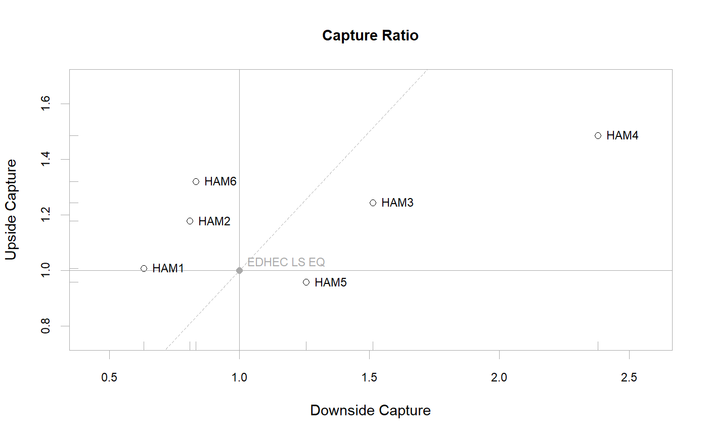

Scatter plot of Up Capture versus Down Capture against a benchmark
chart.CaptureRatios(Ra, Rb, main = "Capture Ratio", add.names = TRUE, xlab = "Downside Capture", ylab = "Upside Capture", colorset = 1, symbolset = 1, legend.loc = NULL, xlim = NULL, ylim = NULL, cex.legend = 1, cex.axis = 0.8, cex.main = 1, cex.lab = 1, element.color = "darkgray", benchmark.color = "darkgray", ...)
| Ra | Returns to test, e.g., the asset to be examined |
|---|---|
| Rb | Returns of a benchmark to compare the asset with |
| main | Set the chart title, same as in |
| add.names | Plots the row name with the data point. Default TRUE. Can be removed by setting it to NULL |
| xlab | Set the x-axis label, as in |
| ylab | Set the y-axis label, as in |
| colorset | Color palette to use, set by default to "black" |
| symbolset | From |
| legend.loc | Places a legend into one of nine locations on the chart: bottomright, bottom, bottomleft, left, topleft, top, topright, right, or center. |
| xlim | set the x-axis limit, same as in |
| ylim | set the y-axis limit, same as in |
| cex.legend | The magnification to be used for sizing the legend relative to the current setting of 'cex'. |
| cex.axis | The magnification to be used for axis annotation relative to
the current setting of 'cex', same as in |
| cex.main | The magnification to be used for sizing the title relative to the current setting of 'cex'. |
| cex.lab | The magnification to be used for x and y labels relative to the current setting of 'cex'. |
| element.color | Specify the color of the box, axes, and other chart elements. Default is "darkgray" |
| benchmark.color | Specify the color of the benchmark reference and crosshairs. Default is "darkgray" |
| … | Any other passthru parameters to |
Scatter plot shows the coordinates of each set of returns' Up and Down Capture against a benchmark. The benchmark value is by definition plotted at (1,1) with solid crosshairs. A diagonal dashed line with slope equal to 1 divides the plot into two regions: above that line the UpCapture exceeds the DownCapture, and vice versa.
plot, par,
UpDownRatios, table.UpDownRatios
data(managers) chart.CaptureRatios(managers[,1:6], managers[,7,drop=FALSE])